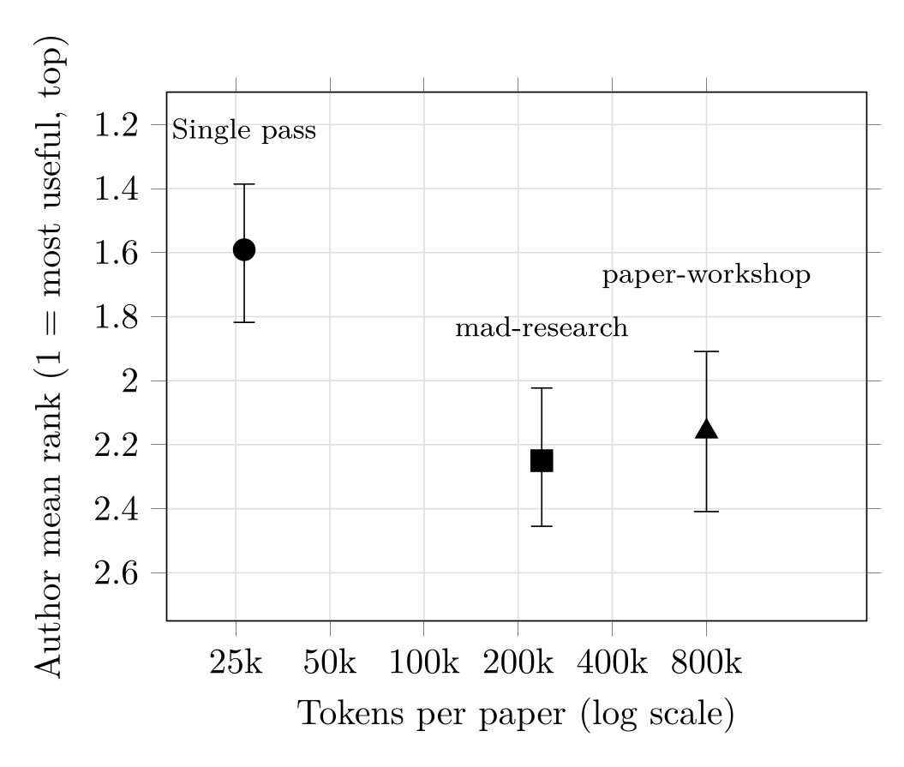

Abstract
Probably not, at least for meta-analyses in economics. In a pre-registered, identity-masked, within-paper experiment, the authors of 44 meta-analyses ranked three AI reports on their own paper by usefulness for improving it: a single pass by a frontier model against two multi-agent debate tools we built and expected to win. All reports were held to a common length and template. The authors preferred the single pass, by 0.66 rank points over mad-research (95% CI 0.32 to 1.00) and 0.57 over paper-workshop (0.16 to 0.95), though paper-workshop spent roughly thirty times the tokens. Authors who recalled their journal referee report usually placed it first and never last; in a separate exercise, three AI judges almost always placed the real journal referee report last. In the three-way comparison, Gemini (the judge whose model family wrote none of the reports) would have ranked paper-workshop first in the authors' place, reversing the single-pass preference. The reversal warns against substituting an AI judge for the author. We measure perceived usefulness for finished papers; whether AI should referee papers is a separate question.
Fig: Thirty times the tokens, no gain in the authors' rankings{kind=link}

Materials: the study was registered before any report was generated; the online supplement is on OSF; and the replication package (de-identified rankings, analysis code, judge prompts, and blinded AI reports on our own papers) is archived on Zenodo.
Reference: Havranek Tomas, Irsova Zuzana (2026), “Does Multi-Agent Debate Improve AI Feedback on Research Papers?” Charles University, Prague. Available at meta-analysis.cz/debate.